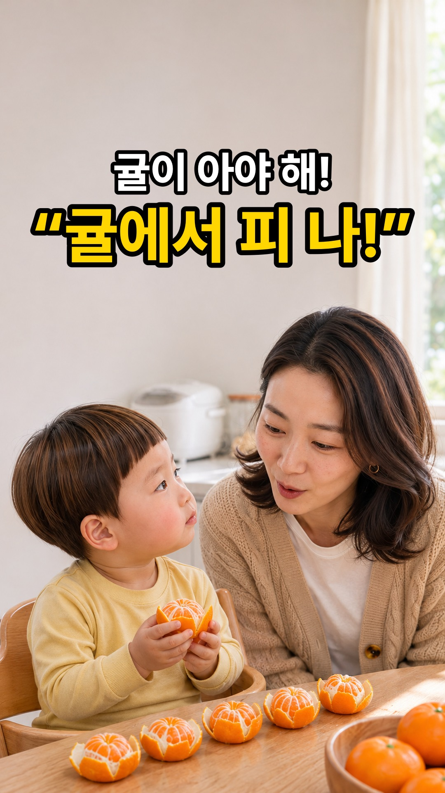
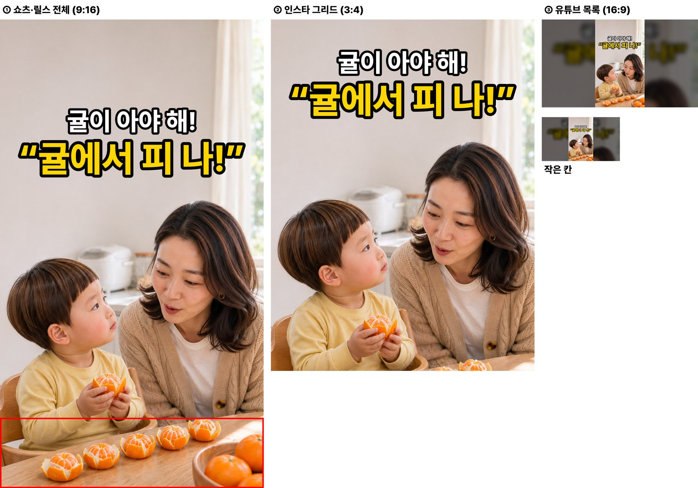
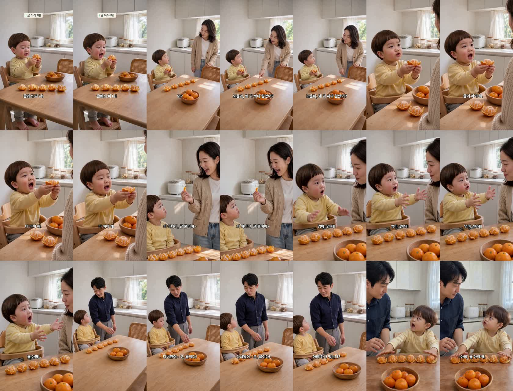
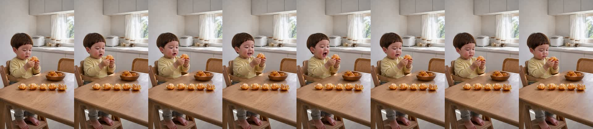
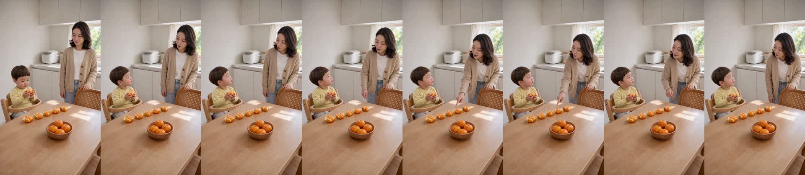
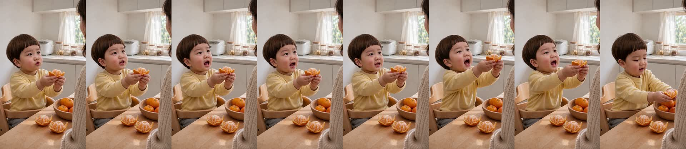
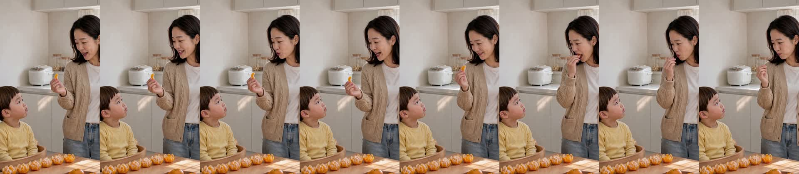
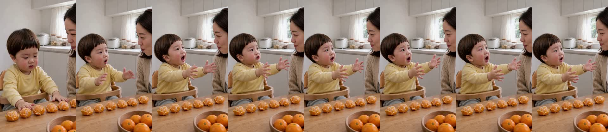
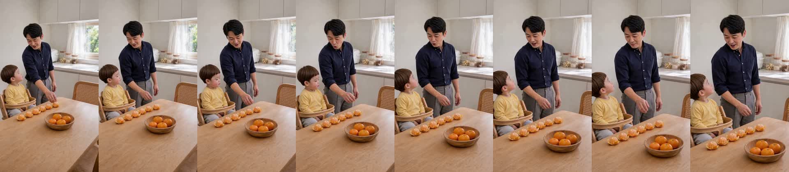
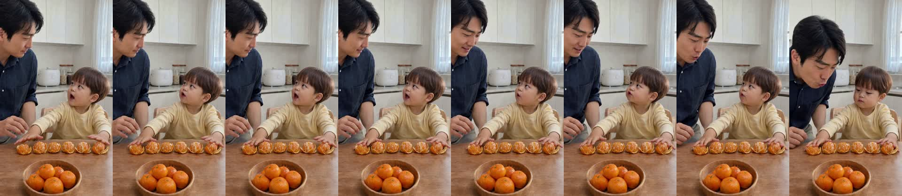

| C01 | 도윤 [후킹]: “귤에서 피 나!” 식탁 아기 의자에서 반쯤 깐 귤을 두 손에 들고 엄지에 튄 귤즙을 보며 눈이 휘둥그레진 도윤 |
|---|---|
| C02 | 엄마: “어? 도윤아, 왜 다 까다 말았어?” 식탁 위에 꽃잎처럼 반쯤 까서 일렬로 세워 둔 귤 줄을 가리키며 묻는 엄마 |
| C03 | 도윤: “귤이 아야 해! 다 아야 해!” 두 손으로 귤을 엄마에게 들어 보이다가 귤 줄 옆에 조심스레 내려놓는 도윤 |
| C04 | 엄마: “피 아니야, 귤물이야~” 귤 한 쪽을 들어 보여 주며 설명하고 입에 쏙 넣는 엄마 |
| C05 | 도윤: “엄마, 안 돼! 귤 아파!” 두 팔을 엄마 쪽으로 다급하게 뻗으며 말리는 도윤 |
| C06 | 아빠: “다녀왔어~ 오, 귤이다! 아빠 하나 먹는다?” 퇴근해 들어오며 식탁 위 귤 줄을 보고 반갑게 손을 뻗는 아빠 |
| C07 | 도윤 [펀치라인]: “아빠, 귤 아야 해. 호~ 해 줘!” 두 손으로 귤 줄 위를 지붕처럼 가리는 도윤과 몸을 숙여 귤에 호~ 불어 주는 아빠 |







